Mahasiswa PPG Prajabatan • Bidang Studi Informatika
Putri Fadhilah Roslin, S.Kom.
Selamat datang di E-Portfolio Praktik Pengalaman Lapangan (PPL) Terbimbing saya. Website ini mendokumentasikan perjalanan saya sebagai calon guru Informatika selama melaksanakan praktik mengajar di SMPN 25 Padang. Melalui berbagai pengalaman pengalaman pembelajaran, penyusunan perangkat ajar, implementasi pembelajaran, refleksi, dan evaluasi, saya belajar untuk menjadi guru yang tidak hanya menguasai materi, tetapi juga mampu menciptakan pembelajaran yang bermakna, menyenangkan, dan berpusat pada murid.
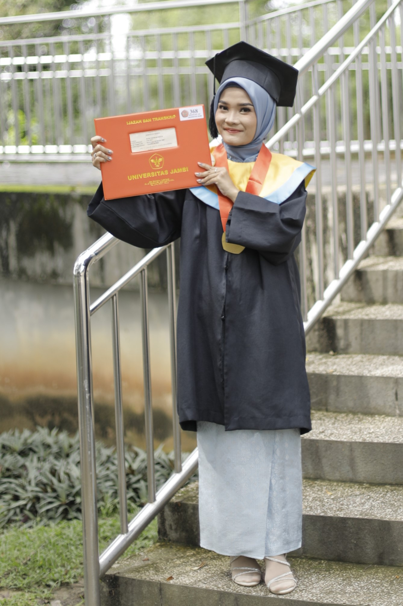
LPTK Penyelenggara & Sekolah Mitra PPL
Instansi akademis tempat saya menimbang ilmu selama program PPG Prajabatan.
Universitas Negeri Padang (LPTK)
Kampus Utama UNP, Air Tawar, Kota Padang, Sumatera Barat
Universitas Negeri Padang (UNP) merupakan salah satu LPTK unggulan nasional yang menjadi kawah candradimuka saya dalam memperdalam kompetensi pedagogic, profesional, sosial, dan kepribadian pada bidang studi Informatika. Di sinilah teori-teori pendidikan modern dikoordinasikan secara sistematis demi melahirkan guru masa depan yang literat teknologi.
Video Profil Kampus


SMP Negeri 25 Padang (Sekolah Mitra PPL)
Jl. Gajah Mada No. 3, Gn. Pangilun, Kec. Padang Utara, Kota Padang, Sumatera Barat
SMP Negeri 25 Padang adalah sekolah mitra tempat saya mengaplikasikan teori pembelajaran secara riil melalui program PPL Terbimbing. Di lingkungan belajar yang aktif ini, saya berkesempatan merancang modul ajar berdiferensiasi Informatika, menyusun strategi interaktif berbasis kelas, serta mendampingi tumbuh kembang potensi siswa.
Video Profil Sekolah


Profil & Latar Belakang
Mengenal lebih dekat latar belakang, inspirasi menjadi guru, dan asal daerah saya.
"Tidak ada gunanya IQ Anda tinggi namun malas dan tidak memiliki disiplin. Yang terpenting adalah Anda konsisten, bekerja keras, serta mampu menyelaraskan iman, takwa, dan ilmu teknologi untuk berkontribusi bagi masa depan bangsa yang cerah."
— Prof. Dr. Ing. H. Bacharuddin Jusuf Habibie, FREng.
Putri Fadhilah Roslin, S.Kom.
Calon Guru Profesional
Batusangkar, SumbarInspirasi Menjadi Guru
Ketertarikan saya menjadi guru berawal dari keyakinan bahwa pendidikan merupakan sarana terbaik untuk membantu seseorang berkembang dan mencapai potensinya. Sebagai lulusan bidang Informatika, saya melihat bahwa perkembangan teknologi yang sangat cepat perlu diimbangi dengan pendidikan yang mampu membentuk karakter digital murid. Saya ingin menjadi bagian dari proses tersebut dengan membantu murid tidak hanya memahami teknologi, tetapi juga menggunakannya secara bijaksana dan bertanggung jawab.
Tujuan Menjadi Guru Profesional
Saya bercita-cita menjadi guru Informatika yang profesional, inovatif, dan reflektif. Saya ingin menciptakan pembelajaran yang relevan dengan kehidupan murid, memanfaatkan teknologi secara optimal, serta membimbing murid menjadi individu yang kritis, kreatif, berkarakter, dan mampu menghadapi tantangan era digital.
Tentang Saya
Nama saya Putri Fadhilah Roslin, mahasiswa Pendidikan Profesi Guru (PPG) Prajabatan Bidang Studi Informatika. Saya merupakan sarjana Universitas Jambi dengan program studi Sistem Informasi. Saya berasal dari Batusangkar, Kabupaten Tanah Datar, Sumatera Barat, daerah yang dikenal dengan budaya Minangkabau yang menjunjung tinggi nilai pendidikan, musyawarah, dan pembelajaran sepanjang hayat.
Biodata Lengkap
| NIM | 25427714 |
| Jurusan / Rombel | Informatika / Rombel 2 - 2026 |
| Surel Resmi | putriroslinn@gmail.com |
Keunikan Daerah Asal
Saya berasal dari Sumatera Barat, provinsi yang kaya akan budaya, kuliner, dan destinasi wisata yang menjadi identitas masyarakat Minangkabau.
Kuliner: Dakak-Dakak
Salah satu kuliner khas yang berasal dari daerah saya adalah Dakak-Dakak, camilan tradisional dari Simabur, Pariangan, Kabupaten Tanah Datar. Dakak-Dakak memiliki tekstur renyah, cita rasa gurih yang khas, serta proses pembuatan yang unik karena menggunakan alat tradisional dari batok kelapa yang menghasilkan bunyi "dakak-dakak" saat digunakan. Keunikan tersebut menjadikan Dakak-Dakak bukan hanya sekadar makanan ringan, tetapi juga bagian dari warisan budaya Minangkabau yang masih lestari hingga saat ini.
Istano Basa Pagaruyung
Sumatera Barat juga memiliki berbagai destinasi wisata budaya yang terkenal, salah satunya adalah Istano Basa Pagaruyung yang berada di Pagaruyung, Kabupaten Tanah Datar. Bangunan megah ini memiliki tiga lantai, puluhan tiang penyangga, serta gonjong khas Rumah Gadang yang menjadi simbol kebudayaan Minangkabau. Di dalamnya terdapat berbagai replika furnitur dan artefak tradisional yang memperkenalkan sejarah serta nilai-nilai budaya masyarakat Minangkabau. Keberadaan Istano Basa Pagaruyung tidak hanya menjadi objek wisata, tetapi juga menjadi sarana pelestarian budaya yang memperkuat identitas masyarakat Sumatera Barat.
Artefak Produk Pembelajaran
Kumpulan dokumentasi, perangkat ajar, instrumen evaluasi, dan rekam jejak pemenuhan kompetensi klinis selama masa PPL Terbimbing.
Selama pelaksanaan PPL Terbimbing di SMPN 25 Padang, saya mengembangkan dan mengimplementasikan perangkat pembelajaran Informatika kelas VIII pada elemen Literasi Digital melalui tiga siklus pembelajaran yang saling berkesinambungan. Setiap siklus dirancang berdasarkan hasil refleksi dan evaluasi pada pembelajaran sebelumnya sehingga terjadi proses perbaikan berkelanjutan dalam perencanaan maupun pelaksanaan pembelajaran. Artefak yang ditampilkan pada setiap siklus meliputi Rencana Pembelajaran Mendalam (RPM), media pembelajaran, hasil kerja murid, penilaian Guru Pamong dan Dosen Pembimbing Lapangan, dokumentasi kegiatan, serta video praktik mengajar. Keseluruhan artefak tersebut menjadi bukti proses belajar saya sebagai calon guru profesional sekaligus menunjukkan perkembangan kompetensi pedagogik selama pelaksanaan PPL Terbimbing.
Akses Cepat Sub-Artefak
Siklus 1
Analisis, RPM, Media, Hasil Kerja Murid, Penilaian Guru Pamong, Dokumentasi video dan foto praktik mengajar
Siklus 2
Analisis, RPM, Media, Hasil Kerja Murid, Penilaian Guru Pamong, Dokumentasi video dan foto praktik mengajar
Siklus 3
Analisis, RPM, Media, Hasil Kerja Murid, Penilaian Guru Pamong, Dokumentasi video dan foto praktik mengajar
Profiling Murid
Laporan Hasil Asesmen Awal Murid
Logbook
Catatan Aktivitas Harian Bersama Guru Pamong dan Bimbingan Bersama DPL
Kunjungan DPL
Kunjungan DPL dan Penilaian
Analisis Artefak Produk Pembelajaran
Evaluasi kritis keterkaitan produk dengan hasil belajar muriddan kesesuaian paradigma baru.
Kendala yang Terjadi Selama Proses Penyusunan
Dalam proses penyusunan perangkat pembelajaran, tantangan terbesar adalah menyesuaikan aktivitas pembelajaran dengan karakteristik murid yang beragam, mengelola alokasi waktu pembelajaran, serta mempersiapkan media yang mampu meningkatkan keterlibatan murid. Selain itu, diperlukan beberapa kali revisi perangkat agar tujuan pembelajaran, aktivitas, dan asesmen dapat saling selaras.
Teori atau Konsep Pedagogi yang Diadopsi
Perangkat pembelajaran disusun dengan mengintegrasikan berbagai teori yang dipelajari selama PPG. Filosofi Ki Hadjar Dewantara digunakan sebagai landasan dalam menuntun murid sesuai kodratnya. Teori konstruktivisme Piaget dan Vygotsky diterapkan melalui kegiatan diskusi dan kolaborasi, sedangkan prinsip Pembelajaran Mendalam (Deep Learning) diwujudkan melalui pembelajaran yang berkesadaran, bermakna, dan menggembirakan.
Faktor Keberhasilan Penerapan Produk Pembelajaran
Keberhasilan pembelajaran didukung oleh profiling murid yang dilakukan sebelum pembelajaran, penggunaan konteks yang dekat dengan kehidupan murid, serta penerapan model pembelajaran yang mendorong partisipasi aktif. Pemanfaatan media digital yang relevan juga membantu meningkatkan motivasi dan keterlibatan murid selama proses pembelajaran.
Perubahan Komponen untuk Situasi Kelas Berbeda
Perangkat pembelajaran yang dikembangkan bersifat fleksibel dan dapat disesuaikan dengan kondisi kelas yang berbeda. Penyesuaian dapat dilakukan pada jenis media, tingkat kompleksitas aktivitas, strategi pembelajaran, maupun bentuk asesmen agar tetap sesuai dengan kebutuhan, karakteristik, dan lingkungan belajar murid.
Siklus 1
Pengertian Empati serta Hubungan Nilai Toleransi dan Empati pada Dunia Digital
Konteks dan Tujuan
Siklus pertama merupakan tahap awal pembelajaran yang dirancang untuk membangun pemahaman dasar murid mengenai konsep empati serta hubungan antara toleransi dan empati dalam kehidupan digital. Berdasarkan hasil observasi dan profiling murid, diketahui bahwa sebagian besar murid aktif menggunakan media sosial, namun belum sepenuhnya memahami dampak perilaku digital terhadap perasaan dan pengalaman orang lain.
Melalui pembelajaran ini, murid diharapkan mampu memahami makna empati, mengenali keterkaitannya dengan toleransi, serta menerapkan kedua nilai tersebut dalam interaksi digital sehari-hari.
Rencana Pelaksanaan Mendalam (RPM)
Media Pembelajaran Interaktif
Hasil Kerja Murid
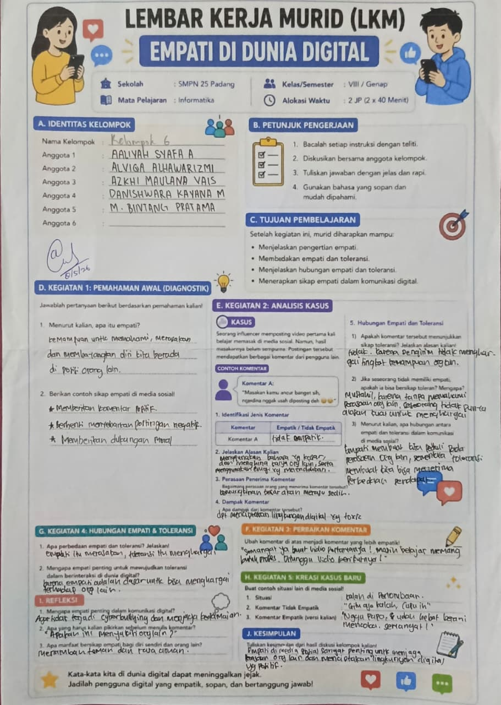
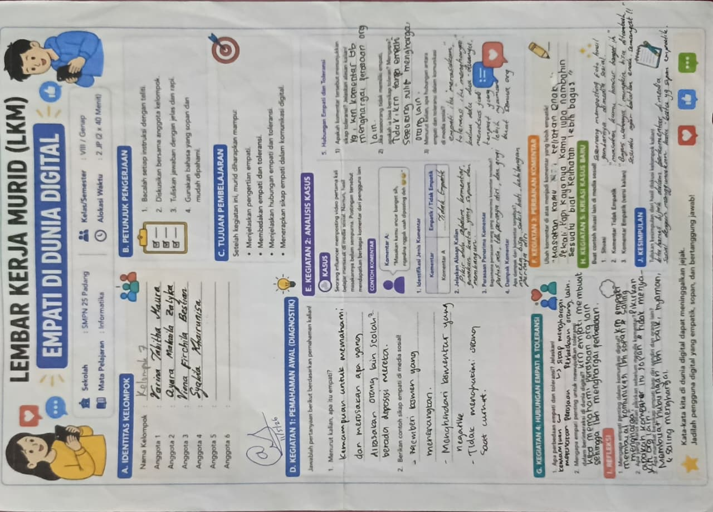
Lembar Penilaian Penyusunan Perangkat Pembelajaran & Praktik Pembelajaran
Penilaian Penyusunan Perangkat Pembelajaran
Penilaian Pelaksanaan Pembelajaran
Rekaman Video Praktik Mengajar & Foto Kegiatan Mengajar
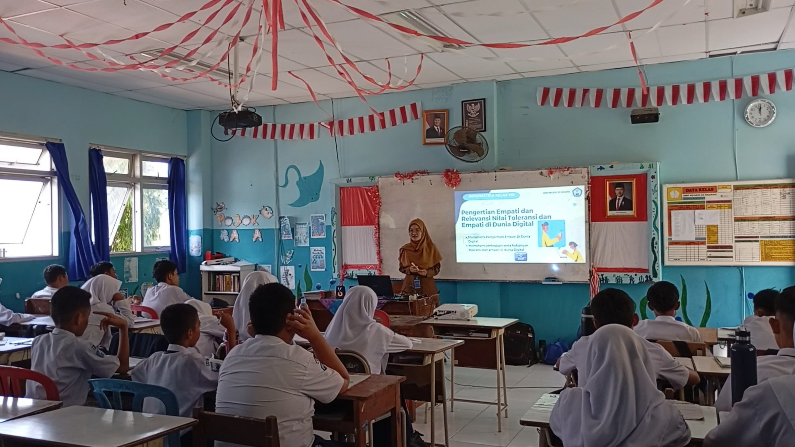
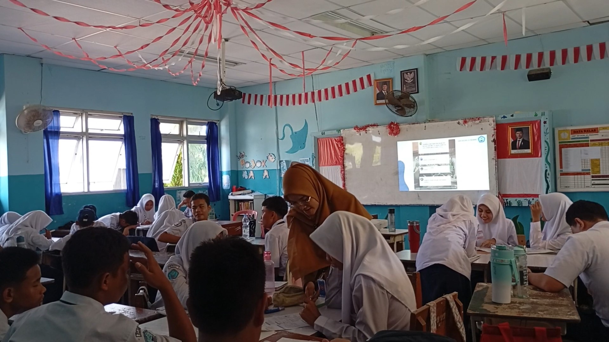
Kelebihan Artefak
Pembelajaran pada siklus ini berhasil mendorong murid untuk menghubungkan konsep yang dipelajari dengan berbagai fenomena nyata yang mereka temui di media sosial. Hasil kerja murid menunjukkan kemampuan yang semakin baik dalam mengidentifikasi manfaat maupun tantangan penerapan toleransi dan empati.
Video pembelajaran dan dokumentasi kegiatan memperlihatkan meningkatnya partisipasi murid dalam kegiatan diskusi serta kemampuan mereka menyampaikan pendapat secara lebih percaya diri.
Kekurangan Artefak
Meskipun partisipasi murid meningkat, masih terdapat beberapa kelompok yang memerlukan pendampingan lebih intensif dalam melakukan analisis kasus. Selain itu, tingkat kemampuan murid yang beragam menyebabkan hasil diskusi kelompok belum sepenuhnya merata.
Guru juga perlu mengembangkan variasi aktivitas yang lebih menantang agar seluruh murid dapat terlibat secara optimal.
Analisis Teori dan Refleksi Pedagogis
Artefak pada siklus ini menunjukkan penerapan teori Konstruktivisme Piaget yang menekankan bahwa pengetahuan dibangun melalui pengalaman belajar aktif. murid memperoleh pemahaman tentang empati dan toleransi melalui analisis kasus yang dekat dengan kehidupan mereka. Pembelajaran juga mengimplementasikan teori Konstruktivisme Sosial Vygotsky, terutama melalui aktivitas diskusi kelompok yang memungkinkan murid membangun pengetahuan secara kolaboratif. Guru berperan sebagai fasilitator yang memberikan scaffolding melalui pertanyaan pemantik dan pendampingan selama proses pembelajaran.
Dari perspektif Filosofi Pendidikan Nasional, pembelajaran berupaya menuntun murid memahami nilai-nilai sosial yang relevan dengan kodrat zaman mereka sebagai generasi digital. Sementara dari perspektif PMAD, pembelajaran telah menerapkan prinsip pembelajaran mendalam yang berkesadaran (mindful), bermakna (meaningful), dan menggembirakan (joyful) melalui konteks yang dekat dengan kehidupan murid.
Siklus 2
Manfaat serta Tantangan dalam Mengamalkan Toleransi dan Empati pada Dunia Digital
Konteks dan Tujuan
Siklus kedua bertujuan memperdalam pemahaman murid mengenai manfaat dan tantangan dalam menerapkan toleransi dan empati di dunia digital. Setelah memahami konsep dasar pada siklus sebelumnya, murid diajak untuk menganalisis berbagai fenomena yang terjadi dalam kehidupan digital serta dampaknya terhadap individu maupun masyarakat.
Pembelajaran dirancang agar murid mampu berpikir kritis terhadap berbagai situasi yang mereka temui di lingkungan digital.
Rencana Pelaksanaan Mendalam (RPM)
Media Pembelajaran Interaktif
Hasil Kerja Murid
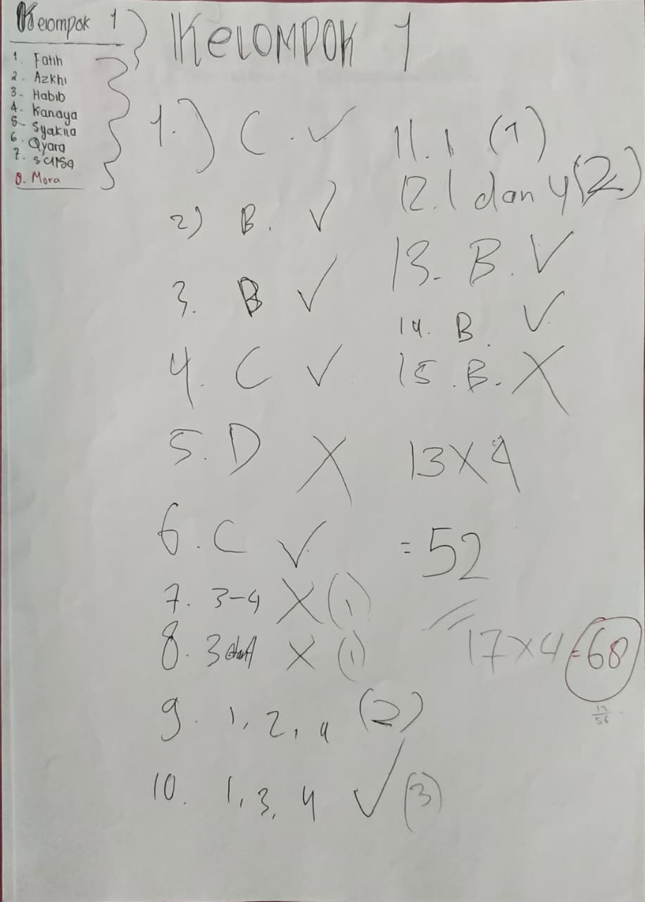
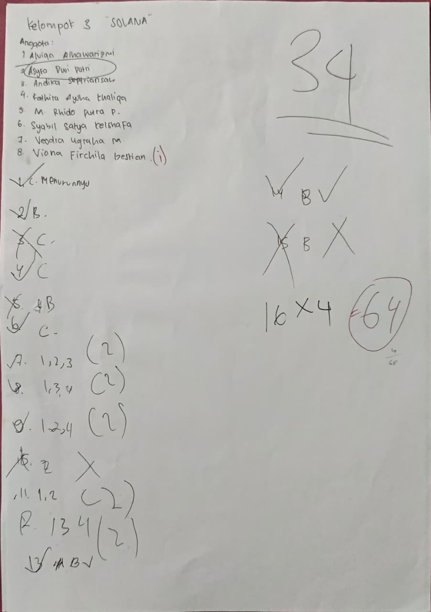
Lembar Penilaian Penyusunan Perangkat Pembelajaran & Praktik Pembelajaran
Penilaian Penyusunan Perangkat Pembelajaran
Penilaian Pelaksanaan Pembelajaran
Rekaman Video Praktik Mengajar & Foto Kegiatan Mengajar
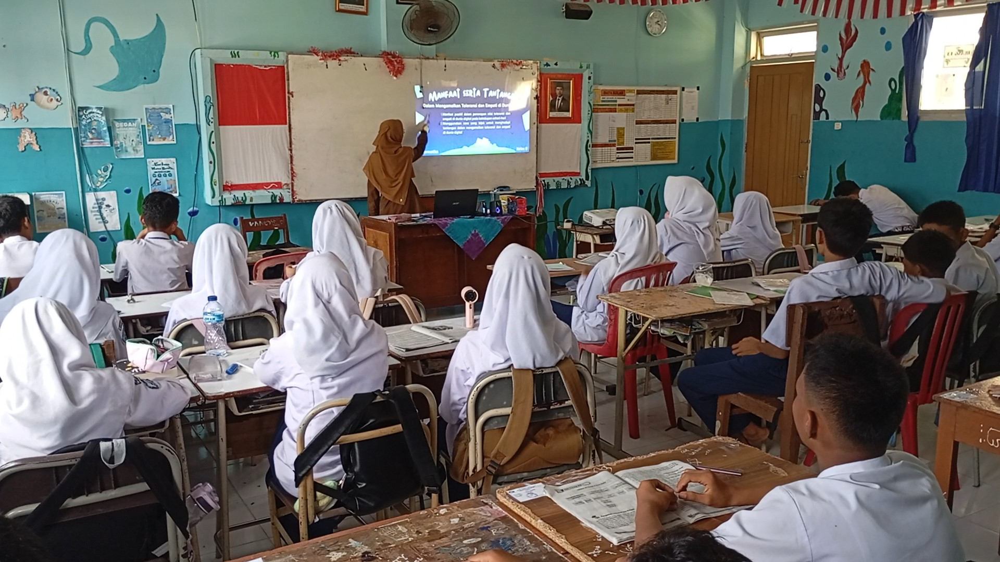
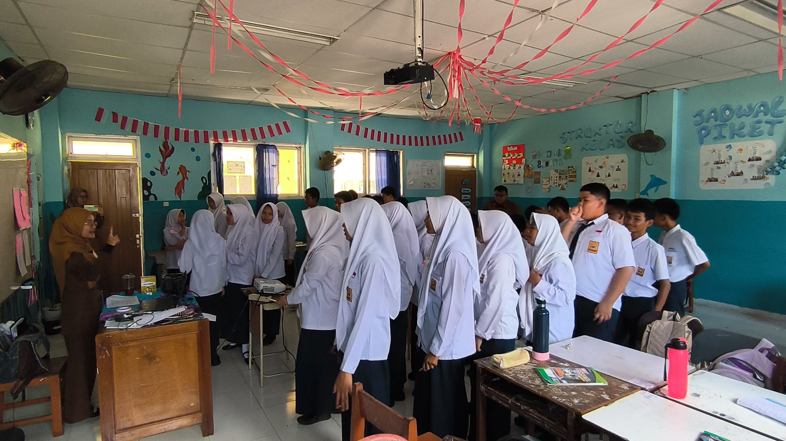
Kelebihan Artefak
Artefak pada siklus ini menunjukkan bahwa pembelajaran telah dirancang dengan mengaitkan materi terhadap pengalaman nyata murid. Penggunaan studi kasus dan media visual membantu murid memahami konsep yang bersifat abstrak menjadi lebih konkret.
Hasil kerja murid memperlihatkan bahwa sebagian besar murid mampu mengidentifikasi contoh perilaku empati dan toleransi dalam kehidupan digital. Dokumentasi kegiatan dan video praktik mengajar juga menunjukkan adanya keterlibatan aktif murid selama proses diskusi dan presentasi kelompok.
Kekurangan Artefak
Berdasarkan refleksi pembelajaran dan umpan balik dari Guru Pamong maupun Dosen Pembimbing Lapangan, masih terdapat beberapa murid yang kurang aktif menyampaikan pendapat saat diskusi berlangsung. Selain itu, pengelolaan waktu pembelajaran belum sepenuhnya optimal sehingga beberapa kelompok memerlukan waktu tambahan untuk menyelesaikan tugas yang diberikan.
Variasi asesmen juga masih dapat ditingkatkan agar mampu menggambarkan capaian belajar murid secara lebih komprehensif.
Analisis Teori dan Refleksi Pedagogis
Artefak pada siklus kedua menunjukkan implementasi teori Pembelajaran Sosial Bandura, di mana murid belajar melalui pengamatan terhadap berbagai contoh perilaku digital yang disajikan dalam kasus pembelajaran. Aktivitas diskusi kelompok juga mencerminkan penerapan Vygotsky yang menekankan pentingnya interaksi sosial dalam proses belajar. murid saling membantu membangun pemahaman melalui kerja sama dan pertukaran ide.
Dari perspektif PPDP, pembelajaran telah memperhatikan karakteristik murid dan memberikan ruang bagi mereka untuk mengembangkan kemampuan berpikir kritis, komunikasi, serta kolaborasi. Sedangkan dari perspektif PMAD, kegiatan pembelajaran dirancang untuk mendorong murid melakukan refleksi terhadap pengalaman dan realitas kehidupan digital yang mereka hadapi sehari-hari.
Siklus 3
Strategi dalam Mengamalkan Toleransi dan Empati pada Dunia Digital
Konteks dan Tujuan
Siklus ketiga merupakan tahap implementasi yang menekankan kemampuan murid dalam merancang strategi nyata untuk mengamalkan toleransi dan empati dalam kehidupan digital. Pada tahap ini murid tidak hanya memahami konsep, tetapi juga menghasilkan karya yang menunjukkan penerapan pengetahuan yang telah dipelajari.
Tujuan utama pembelajaran adalah membantu murid menerapkan nilai toleransi dan empati melalui produk kreatif yang dapat digunakan sebagai media kampanye positif di lingkungan digital.
Rencana Pelaksanaan Mendalam (RPM)
Media Pembelajaran Interaktif
Hasil Kerja Murid
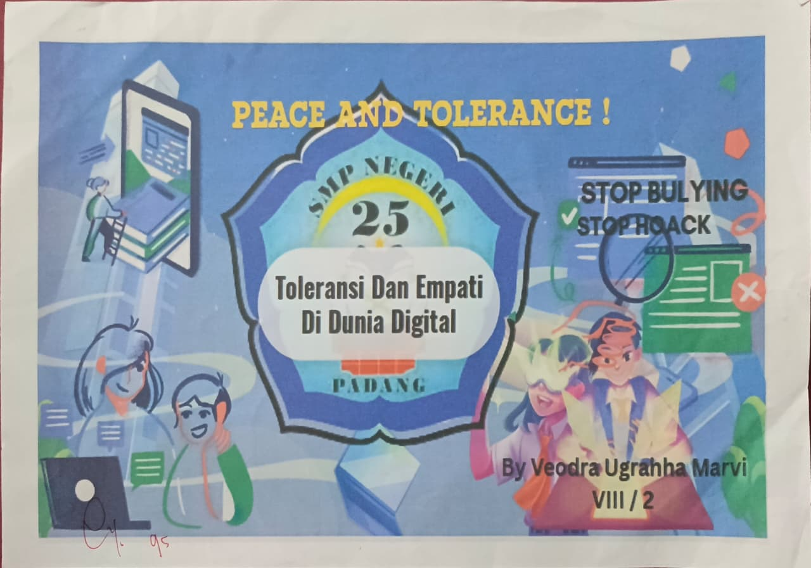
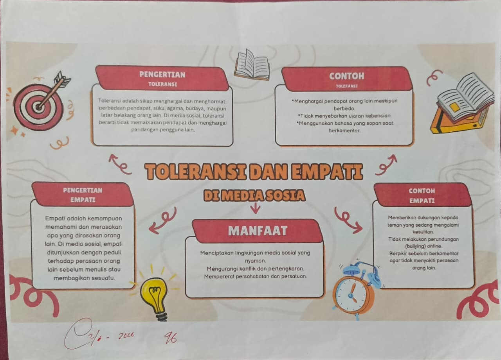
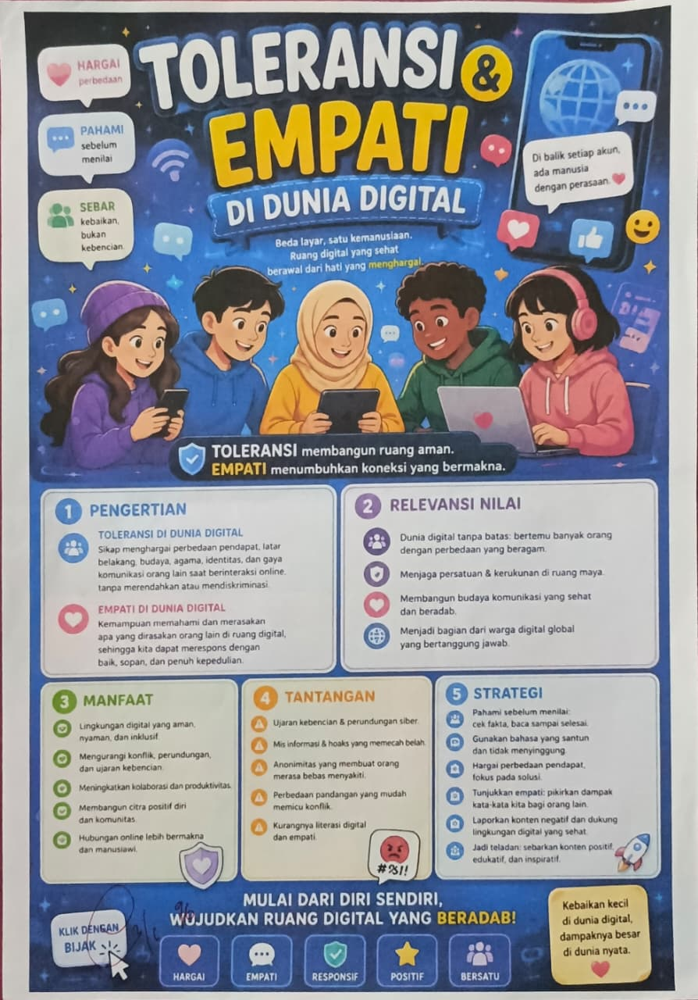
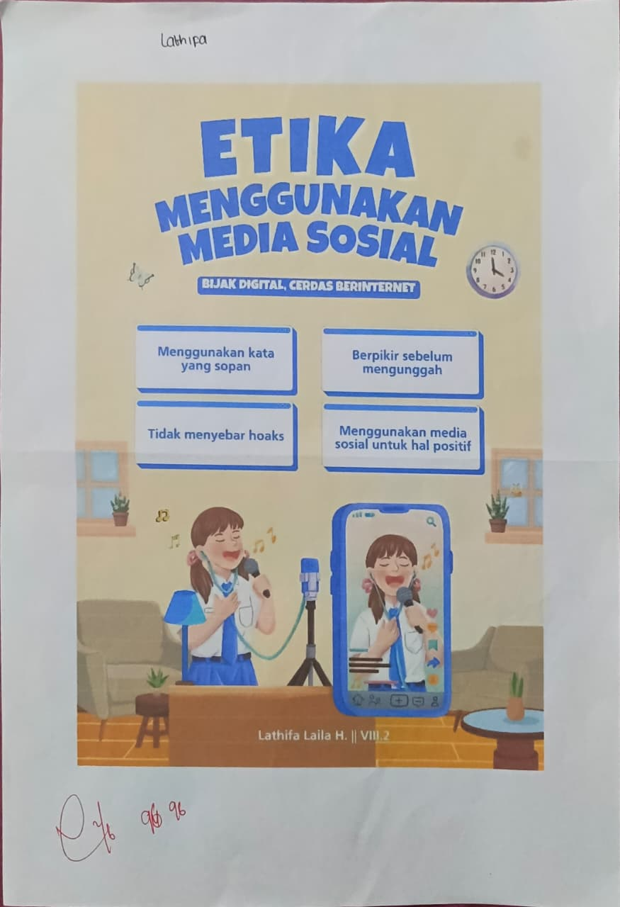
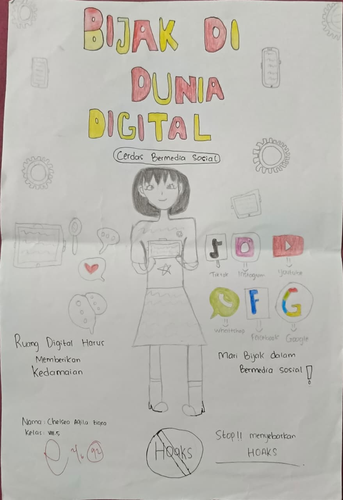
Lembar Penilaian Penyusunan Perangkat Pembelajaran & Praktik Pembelajaran
Penilaian Penyusunan Perangkat Pembelajaran
Penilaian Pelaksanaan Pembelajaran
Rekaman Video Praktik Mengajar & Foto Kegiatan Mengajar
Kelebihan Artefak
Artefak pada siklus ini menunjukkan kemampuan murid dalam mengintegrasikan pengetahuan, keterampilan, dan kreativitas melalui produk poster yang dihasilkan. Sebagian besar murid mampu merancang strategi yang relevan dan aplikatif dalam mengamalkan toleransi dan empati di dunia digital.
Hasil karya yang dihasilkan juga menunjukkan adanya peningkatan pemahaman dibandingkan siklus sebelumnya.
Kekurangan Artefak
Perbedaan kemampuan desain dan kreativitas menyebabkan kualitas produk yang dihasilkan cukup beragam. Beberapa murid masih memerlukan arahan lebih lanjut dalam menuangkan ide ke dalam bentuk visual yang efektif.
Selain itu, keterbatasan waktu membuat proses revisi dan penyempurnaan poster belum dapat dilakukan secara maksimal.
Analisis Teori dan Refleksi Pedagogis
Artefak pada siklus ketiga menunjukkan penerapan pendekatan Project-Based Learning karena murid menghasilkan produk nyata sebagai bentuk penerapan hasil belajar. Melalui pembuatan poster, murid tidak hanya memahami konsep tetapi juga mengomunikasikan gagasan secara kreatif. Pembelajaran ini juga mencerminkan prinsip konstruktivisme karena murid membangun pemahaman melalui proses merancang, berdiskusi, dan menghasilkan karya. Dari perspektif PMAD, aktivitas pembelajaran telah memenuhi karakteristik pembelajaran mendalam karena murid mampu menghubungkan konsep dengan kehidupan nyata dan menghasilkan solusi yang bermakna.
Secara reflektif, siklus ini menunjukkan bahwa pembelajaran yang memberikan kesempatan kepada murid untuk berkarya dan menyelesaikan masalah nyata mampu meningkatkan keterlibatan, kreativitas, serta pemahaman yang lebih mendalam terhadap materi yang dipelajari.
Laporan Profiling murid
Analisis demografis, gaya belajar, serta kesiapan kognitif murid untuk pembelajaran berbasis data.
Deskripsi & Jenis Asesmen Profiling
Profiling dilakukan pada awal pembelajaran terhadap 31 murid kelas VIII.2 SMPN 25 Padang. Terdapat beberapa instrumen dalam angket profiling murid, yaitu asesmen awal tes dan non-tes, angket interaksi sosial murid di lingkungan, asesemen gaya belajar visul-kinestetik-auditorial, wawancara, serta observasi perilaku saat pembelajaran.
Angket Profiling Murid
Beberapa Hasil Profiling Murid
Logbook Kegiatan PPL
Catatan rekam jejak aktivitas harian, progres bimbingan, and administrasi berkala selama masa praktik lapangan.
Logbook Bimbingan Bersama DPL
Memuat dokumentasi catatan konsultasi, arahan teoretis, serta umpan balik yang diberikan oleh DPL selama kegiatan PPL.
Logbook Harian Bersama Guru Pamong
Catatan aktivitas real-time harian selama melaksanakan kegiatan PPL di SMPN 25 Padang yang divalidasi langsung oleh Guru Pamong.
Kunjungan DPL
Kunjungan Lapangan, Bukti Administratif, serta Penilaian Komprehensif Proses Bimbingan.
Pendampingan Dosen Pembimbing Lapangan
Selama kegiatan PPL Terbimbing di SMPN 25 Padang, Dosen Pembimbing Lapangan (DPL) melakukan kunjungan berkala sebanyak empat kali. Setiap kunjungan mencakup observasi langsung terhadap proses pembelajaran riil di dalam kelas serta pelaksanaan diskusi reflektif pasca-mengajar bersama mahasiswa PPG dan Guru Pamong. Kehadiran DPL menjadi instrumen penting untuk mentransfer umpan balik konstruktif yang mendalam, melakukan rekonstruksi klinis atas perangkat ajar, serta memastikan jalannya praktik penuntunan murid berjalan sesuai regulasi akademik dan standar kompetensi pedagogis yang diharapkan.
Lembar Penilaian Perangkat Pembelajaran
Dokumentasi Kegiatan Kunjungan & Bimbingan
Kumpulan dokumentasi otentik proses pendampingan instruksional dari tahapan awal hingga akhir PPL Terbimbing:
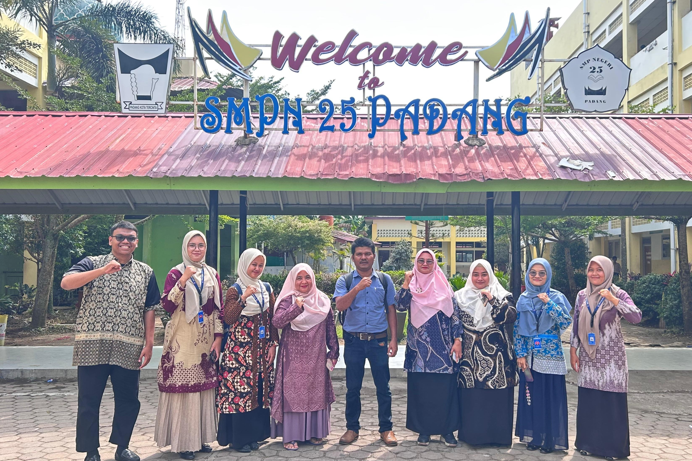
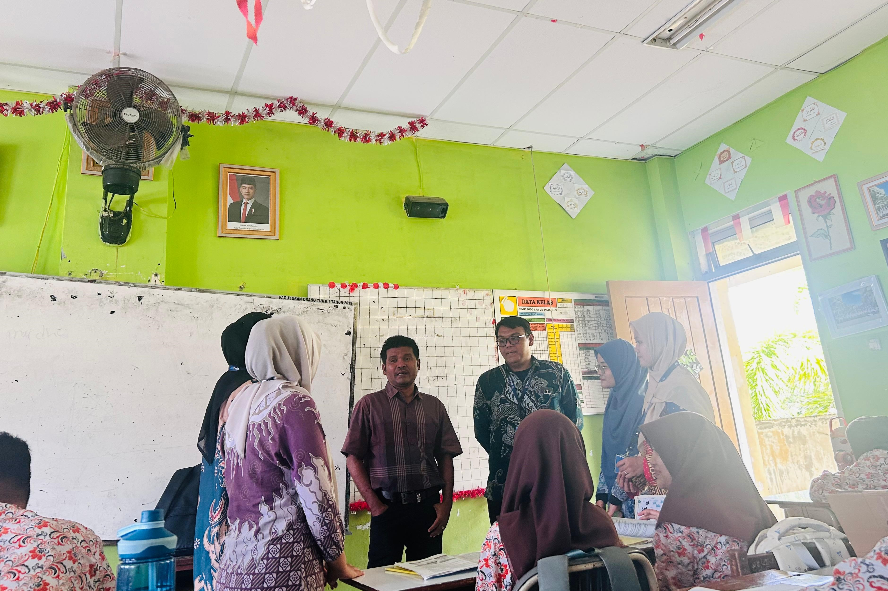
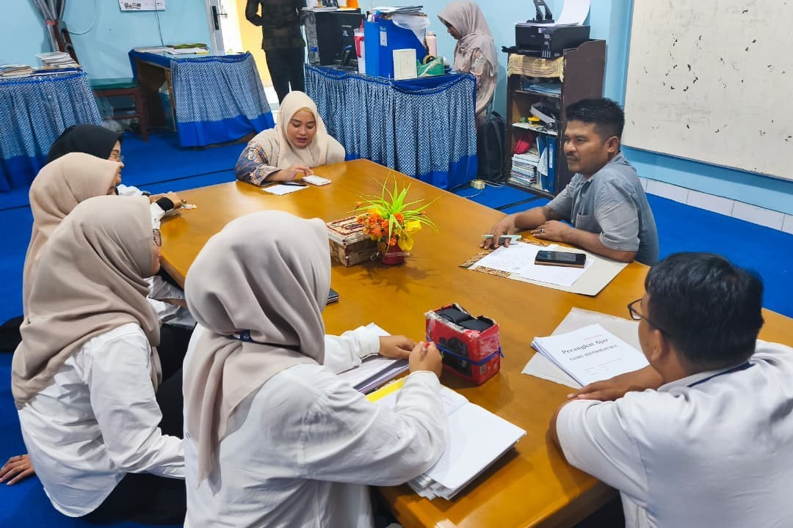
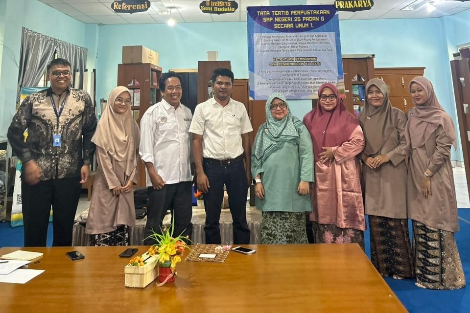
Model Guru yang Dituju
Visi, misi pengembangan diri, target kompetensi, serta refleksi rencana tindak lanjut saya sebagai calon guru Informatika profesional.
Misi Pengembangan Diri
Untuk mewujudkan visi tersebut, saya berkomitmen untuk terus mengembangkan kualitas pembelajaran melalui beberapa langkah nyata, yaitu meningkatkan literasi digital murid, menciptakan pembelajaran yang aktif dan menyenangkan, memanfaatkan teknologi sebagai sarana belajar yang relevan, serta menanamkan nilai-nilai karakter digital seperti toleransi, empati, tanggung jawab, dan etika dalam berinteraksi di ruang digital. Misi ini menjadi arah yang akan saya pegang dalam perjalanan menuju guru profesional.
Kompetensi yang Ingin Dibangun
Sebagai calon guru profesional, saya menyadari bahwa keberhasilan pembelajaran tidak hanya ditentukan oleh penguasaan materi, tetapi juga oleh kemampuan guru dalam mengelola proses belajar secara menyeluruh. Oleh karena itu, saya ingin terus mengembangkan kompetensi pedagogik dalam merancang pembelajaran yang berpusat pada murid, kompetensi profesional dalam mengikuti perkembangan ilmu dan teknologi, kompetensi sosial dalam membangun komunikasi yang positif dengan seluruh warga sekolah, serta kompetensi kepribadian agar mampu menjadi teladan yang berintegritas, disiplin, dan bertanggung jawab.
Karakter Guru yang Ingin Dibangun
Melalui pengalaman PPL Terbimbing, saya semakin memahami bahwa guru profesional bukan hanya pengajar, tetapi juga pembimbing, fasilitator, motivator, dan pembelajar sepanjang hayat. Oleh karena itu, karakter yang ingin saya bangun adalah humanis, pedagogis, reflektif, adaptif terhadap perubahan, dan terbuka terhadap pembelajaran baru. Saya ingin menjadi guru yang mampu memahami kebutuhan murid, menghargai keberagaman karakter mereka, serta menciptakan lingkungan belajar yang aman, nyaman, dan mendukung perkembangan setiap individu.
Kekuatan yang Saya Miliki
Berdasarkan pengalaman selama PPL Terbimbing, saya melihat bahwa salah satu kekuatan yang saya miliki adalah kemampuan dalam memanfaatkan teknologi untuk mendukung pembelajaran, sehingga materi dapat disajikan lebih menarik dan relevan dengan kehidupan murid. Selain itu, saya memiliki kemauan belajar yang tinggi, terbuka terhadap masukan dari Guru Pamong maupun Dosen Pembimbing Lapangan, serta berusaha membangun hubungan yang positif dengan murid. Kekuatan-kekuatan tersebut menjadi modal awal yang membantu saya berkembang menuju guru profesional.
Kelemahan & Area Pengembangan
Di sisi lain, pengalaman PPL juga membantu saya menyadari beberapa aspek yang masih perlu ditingkatkan. Saya masih perlu mengembangkan kemampuan dalam mengelola waktu pembelajaran secara lebih efektif, memperkuat penerapan asesmen autentik dan pembelajaran berdiferensiasi, serta memperkaya variasi strategi pembelajaran yang mampu mengakomodasi kebutuhan belajar peserta didik yang beragam. Kesadaran terhadap kelemahan ini menjadi bahan refleksi yang penting agar saya terus berkembang dan tidak berhenti pada kemampuan yang sudah dimiliki saat ini.
Rencana Tindak Lanjut
Strategi aksi pengembangan profesi berkelanjutan
Sebagai upaya mewujudkan model guru yang saya cita-citakan, saya berkomitmen untuk terus melakukan pengembangan diri melalui berbagai kegiatan profesional. Saya berencana mengikuti pelatihan dan webinar pendidikan, memperdalam penerapan pembelajaran berdiferensiasi, mengembangkan media pembelajaran berbasis teknologi, aktif dalam komunitas belajar guru, serta membiasakan diri melakukan refleksi dan penelitian sederhana terhadap praktik pembelajaran yang saya laksanakan. Melalui langkah-langkah tersebut, saya berharap dapat terus meningkatkan kompetensi dan kualitas diri sebagai guru yang profesional, adaptif, dan relevan dengan kebutuhan pendidikan abad ke-21.
Pelatihan & Webinar
Pendalaman Diferensiasi
Media Pembelajaran Berbasis Teknologi
Komunitas Praktisi
Riset & Refleksi
Refleksi Akhir Praktik Pengalaman Lapangan Terbimbing (PPLT)
Analisis kritis, evaluasi personal, dan proyeksi perbaikan komprehensif pasca-tahapan bimbingan.
1. Pembelajaran Selama Tahapan PPL Terbimbing
Selama tahapan PPL Terbimbing dari awal hingga akhir, saya telah menginternalisasi bahwa esensi guru tidak sekadar mengajar, melainkan mengorkestrasi lingkungan belajar yang aman dan berpihak pada murid. Saya belajar menerapkan asesmen diagnostik secara riil, memetakan karakteristik murid yang beragam, serta merancang sintaks pembelajaran yang menuntut nalar kritis melalui PBL dan PjBL. Proses bimbingan ini menempa keterampilan interpersonal saya dalam berkolaborasi dengan sejawat, Guru Pamong, dan DPL untuk rekonstruksi perangkat ajar demi kualitas pembelajaran yang terus meningkat.
2. Pengalaman Menantang & Solusi Strategis
Tantangan terbesar selama PPL adalah mengelola waktu
pembelajaran, menjaga keterlibatan seluruh murid, serta
menyesuaikan strategi pembelajaran dengan kondisi kelas yang
dinamis. Situasi tersebut mengajarkan saya pentingnya
fleksibilitas dan kemampuan mengambil keputusan secara cepat
saat pembelajaran berlangsung.
Solusinya: Untuk mengatasi hal tersebut, saya
rutin melakukan refleksi pasca-pembelajaran, memperbaiki
perangkat ajar, berdiskusi dengan Guru Pamong/DPL, serta
menyiapkan strategi cadangan jika rencana utama tidak berjalan
lancar.
3. Umpan Balik Akhir untuk PPL Mandiri
Dalam diskusi refleksi akhir, Guru Pamong dan DPL memberikan apresiasi terhadap peningkatan penguasaan kelas dan adaptabilitas digital saya. Namun, terdapat saran konstruktif yang ditekankan sebagai modal menuju PPL Mandiri, yaitu: meningkatkan manajemen waktu, memperkuat asesmen pembelajaran, serta memperluas variasi aktivitas yang mampu mengakomodasi kebutuhan belajar murid. Umpan balik ini sangat berharga untuk membangun kemandirian penuh saya dalam merumuskan keputusan instruksional yang cepat dan bijak di kelas esok hari.
Analisis Evaluasi Diri
Rencana Tindak Lanjut (RTL)
Sebagai langkah pengembangan diri ke depan, saya berkomitmen untuk terus memperluas khazanah keilmuan, aktif berpartisipasi dalam pengembangan profesional (pelatihan & MGMP), serta secara konsisten melakukan refleksi kritis berkelanjutan. Hal ini bertujuan agar saya mampu bertransformasi menjadi guru Informatika yang jauh lebih kompeten, adaptif, dan berwibawa pada fase PPL Mandiri hingga karir profesional di masa depan.
Filosofi Mengajar Saya
Manifestasi ideologi, keyakinan pedagogis, serta nilai dasar perjalanan saya menuju profesi guru Informatika.
— Adaptasi Pemikiran Ki Hadjar Dewantara
Selama mengikuti Praktik Pengalaman Lapangan (PPL) Terbimbing di SMPN 25 Padang, saya semakin memahami bahwa menjadi guru bukan hanya tentang menyampaikan materi pembelajaran, tetapi tentang membangun pengalaman belajar yang mampu membantu murid berkembang secara utuh. Pengalaman observasi, asistensi, dan praktik mengajar memberikan pemahaman bahwa setiap murid memiliki karakteristik, kemampuan, minat, serta kebutuhan belajar yang berbeda. Oleh karena itu, saya meyakini bahwa tugas utama seorang guru adalah menuntun dan memfasilitasi proses belajar murid agar mereka dapat berkembang sesuai potensi yang dimiliki. Keyakinan ini sejalan dengan pemikiran Ki Hadjar Dewantara yang menempatkan guru sebagai pamong yang membimbing murid sesuai kodrat alam dan kodrat zamannya. Dalam praktik pembelajaran yang saya lakukan, keyakinan tersebut diwujudkan melalui upaya memahami karakteristik murid terlebih dahulu sebelum merancang pembelajaran, sehingga kegiatan belajar yang dilaksanakan lebih relevan dengan kebutuhan mereka.
4 Pilar Karakter Kompetensi Informatika
Berpikir Kritis
Kreatif Inovatif
Kolaboratif
Karakter Digital
Sebagai calon guru Informatika, saya percaya bahwa pembelajaran tidak boleh hanya berorientasi pada penguasaan pengetahuan dan keterampilan teknis. Pembelajaran harus mampu membentuk murid menjadi individu yang kritis, kreatif, kolaboratif, serta memiliki karakter yang baik dalam kehidupan nyata maupun dunia digital. Pengalaman mengajar materi mengenai toleransi dan empati di dunia digital semakin menguatkan keyakinan saya bahwa pendidikan memiliki peran penting dalam membentuk cara berpikir dan perilaku murid. Oleh karena itu, saya berusaha menghadirkan pembelajaran yang memberikan kesempatan kepada murid untuk berdiskusi, berkolaborasi, memecahkan masalah, dan merefleksikan pengalaman belajarnya. Pendekatan ini selaras dengan teori konstruktivisme yang memandang bahwa pengetahuan dibangun secara aktif oleh murid melalui pengalaman dan interaksi sosial, serta prinsip pembelajaran mendalam yang menekankan pembelajaran berkesadaran, bermakna, dan menggembirakan.
Melalui pengalaman PPL Terbimbing, saya menyadari bahwa saya memiliki beberapa kekuatan yang mendukung proses pembelajaran, seperti kemampuan memanfaatkan teknologi dalam pembelajaran, kemauan keras untuk terus belajar, serta kemampuan membangun hubungan interpersonal yang positif dan hangat dengan murid.
Namun, saya juga menyadari masih terdapat kelemahan yang perlu terus diperbaiki, terutama dalam pengelolaan alokasi waktu pembelajaran, penguatan teknik asesmen yang lebih komprehensif, dan pengembangan strategi pembelajaran berdiferensiasi untuk mengakomodasi kebutuhan belajar yang semakin beragam. Kesadaran ini adalah kompas refleksi saya menuju guru profesional.
Komitmen & Visi Pembelajar Sepanjang Hayat
Rencana pengembangan profesional berkelanjutan
Ke depan, saya berkomitmen untuk terus mengembangkan kompetensi pedagogik, profesional, sosial, dan kepribadian melalui berbagai kegiatan pengembangan diri, seperti mengikuti pelatihan, bergabung dalam komunitas belajar guru, mempelajari inovasi pembelajaran berbasis teknologi, serta membiasakan diri melakukan refleksi berkelanjutan terhadap setiap praktik pembelajaran yang saya lakukan. Saya meyakini bahwa guru profesional adalah pembelajar sepanjang hayat (lifelong learner) yang senantiasa memperbaiki diri demi memberikan pengalaman belajar terbaik bagi muridnya. Filosofi inilah yang akan menjadi landasan, arah, dan ideologi saya dalam menjalani perjalanan sebagai seorang pendidik.
Eksplorasi Inovasi
Mengikuti pelatihan IT dan berinovasi secara mandiri.
Komunitas Praktisi
Bergabung dalam MGMP Informatika & forum belajar keguruan.
Refleksi Rutin
Melakukan evaluasi harian berbasis umpan balik murid secara konsisten.